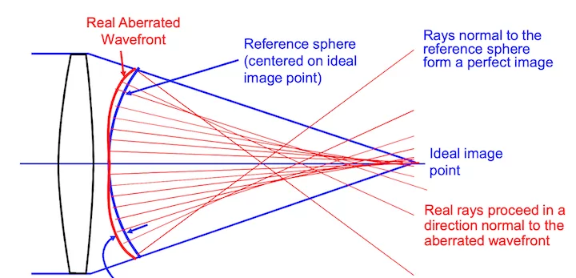
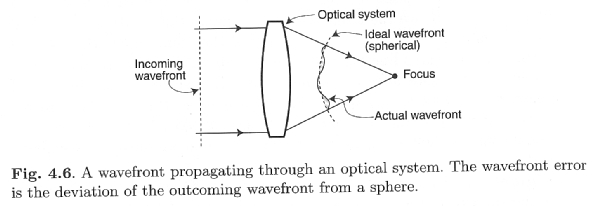
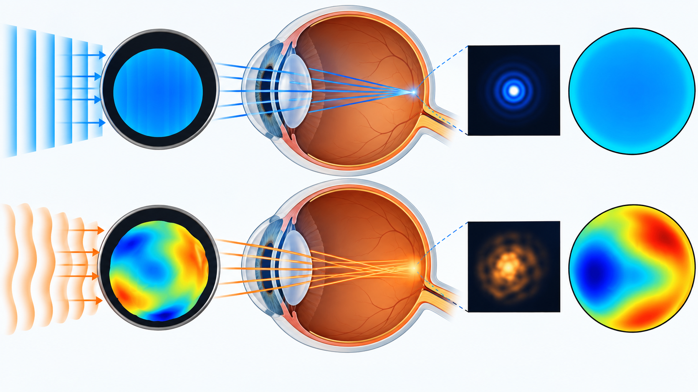
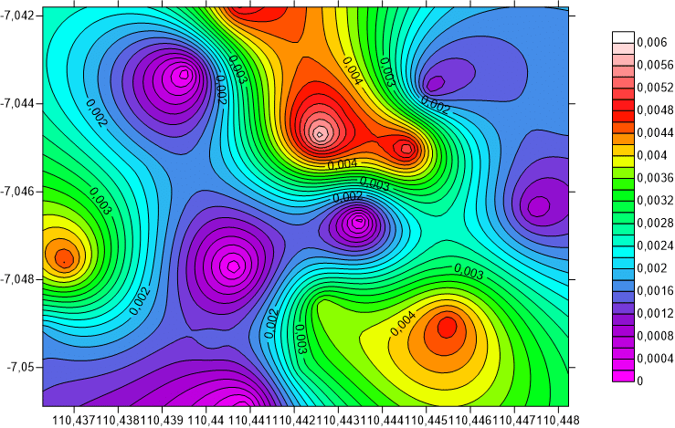
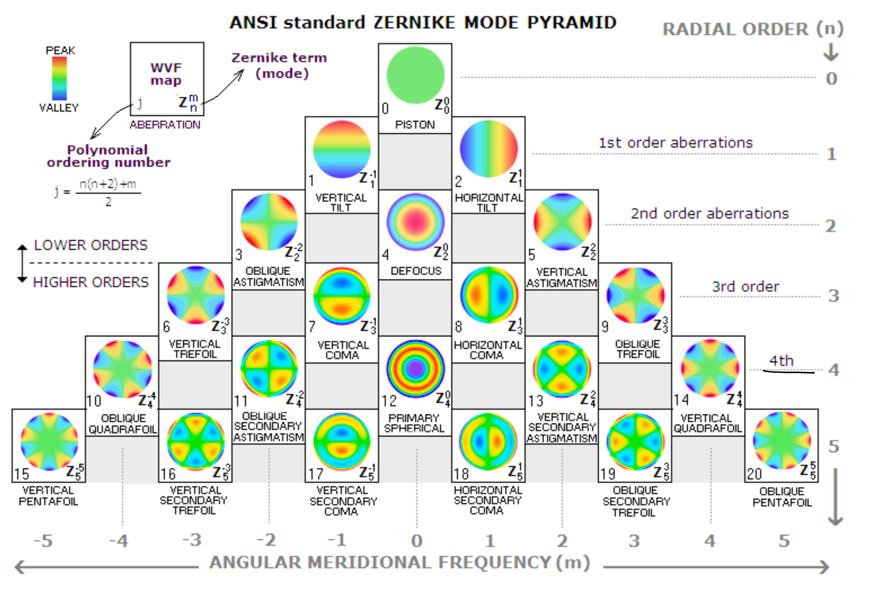
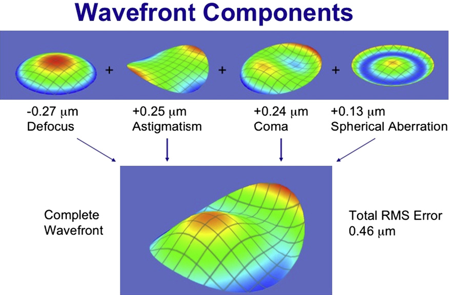
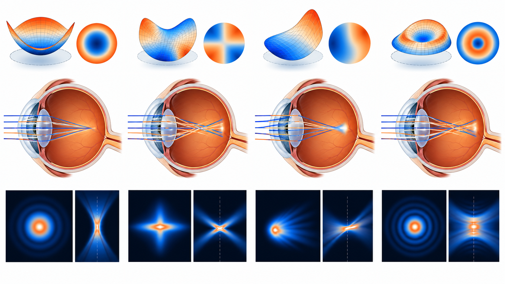
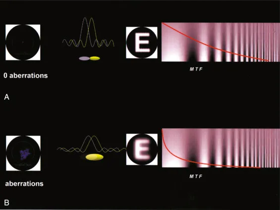

Obiettivi
- Leggere una mappa del fronte d’onda usando legenda e scala.
- Collegare le forme dei modi a defocus, astigmatismo, coma e sferica.
- Spiegare in parole che cosa rappresentano i coefficienti di Zernike.
- Distinguere mappa ottica, immagine di un punto e qualità visiva.
- Confrontare misure solo quando pupilla e convenzioni sono coerenti.
Come descriviamo insieme le deformazioni ottiche?
Livello intuitivo: Nella lezione precedente abbiamo distinto i difetti dell’immagine. Ora osserviamo la deformazione dell’onda che li produce. Una forma complessa può essere descritta combinando alcune forme semplici, ciascuna con un proprio peso.
Per essere maggiormente rigorosi: I polinomi di Zernike costituiscono una famiglia di funzioni definite sul disco della pupilla. Permettono di rappresentare l’errore di cammino ottico rispetto al fronte di riferimento. Qui ne interpretiamo il significato senza sviluppare le formule. La scomposizione descrive l’ottica, non da sola tutta la percezione visiva.
Fronte d’onda e riferimento
Livello intuitivo: Il fronte d’onda unisce punti della luce che si trovano nella stessa fase. Un sistema ideale prepara il fronte necessario a concentrare la luce nel punto immagine. Nel sistema reale, alcune zone sono in anticipo o in ritardo rispetto a quel riferimento.
Per essere maggiormente rigorosi: La mappa del fronte d’onda rappresenta una differenza di cammino ottico, di solito in micrometri o frazioni di lunghezza d’onda. Non è una fotografia della cornea né una mappa automatica delle sue curvature.



Come leggere una mappa di colore
Prima la legenda
Livello intuitivo: I colori trasformano numeri in zone facili da riconoscere. Due zone dello stesso colore hanno valori simili sulla scala scelta. Rosso e blu non significano automaticamente tessuto malato e tessuto sano.
Per essere maggiormente rigorosi: Occorre leggere grandezza, unità, zero, intervallo e verso della scala. Una mappa del fronte d’onda, una topografia in diottrie e una mappa di elevazione descrivono quantità diverse. Anche il significato del rosso dipende dalla palette. Le scale automatiche possono rendere molto colorata una deformazione piccola.
Un esempio con numeri semplici
Livello intuitivo: Se la legenda va da meno un micrometro a più un micrometro, i colori estremi indicano valori distanti due micrometri. Se un’altra mappa usa una scala da meno cinque a più cinque, gli stessi colori corrispondono a uno scarto molto maggiore.
Per essere maggiormente rigorosi: Per confrontare due mappe servono la stessa scala e la stessa area pupillare. Le zone escluse dalla misura non rappresentano automaticamente errore nullo. Il riferimento può essere stato modificato rimuovendo defocus o inclinazioni: va verificato nel rapporto dello strumento.

Le forme e il loro significato
Defocus
Livello intuitivo: La deformazione ricorda una ciotola simmetrica. L’immagine sarebbe più concentrata in un piano diverso da quello scelto. Cambiare messa a fuoco o potere sferico può ridurre questo contributo.
Per essere maggiormente rigorosi: Il defocus è una variazione simmetrica dal centro alla periferia. Una mappa può mostrarlo con zone concentriche, ma per riconoscerlo occorre conoscere il riferimento. Non ogni struttura ad anelli è soltanto defocus.
Astigmatismo
Livello intuitivo: La forma ricorda una sella: una direzione è incurvata diversamente da quella perpendicolare. Un punto tende a produrre focaline e una macchia che cambia orientamento attraversando il fuoco.
Per essere maggiormente rigorosi: I modi di astigmatismo possono essere combinati per descrivere orientamenti diversi. Una correzione cilindrica riduce il contributo di basso ordine appropriato. Il disegno della mappa dipende anche dalla convenzione e dall’orientamento degli assi.
Coma
Livello intuitivo: Un lato della pupilla contribuisce diversamente dall’altro. La macchia di un punto può assumere una coda, come una cometa.
Per essere maggiormente rigorosi: I modi di coma sono asimmetrici e hanno un orientamento. Una figura con lobi di colore non è la stessa cosa della PSF a cometa: la prima descrive l’errore del fronte, la seconda l’intensità nel piano immagine.
Aberrazione sferica
Livello intuitivo: Centro e periferia del fascio non si accordano sulla stessa messa a fuoco. La forma resta simmetrica attorno al centro, ma cambia fra zone centrali e anulari.
Per essere maggiormente rigorosi: La sferica è distinta dal defocus anche se entrambi sono simmetrici. Spostare il piano di fuoco può migliorare il compromesso senza annullare la differenza fra raggi centrali e marginali.
Trifoglio e altri ordini superiori
Livello intuitivo: Una deformazione con tre settori ricorda un trifoglio. Forme più articolate descrivono dettagli che una sola sfera e un solo cilindro non possono compensare.
Per essere maggiormente rigorosi: Il nome indica una simmetria della funzione, non una diagnosi anatomica. Modi diversi possono combinarsi nella stessa mappa reale. Piston modifica la fase globale; tip e tilt spostano l’immagine nel modello ideale senza deformarne da soli la PSF.



Che cosa significa il coefficiente?
Livello intuitivo: È il peso attribuito a una forma nella ricostruzione della mappa. Un peso più grande indica un contributo maggiore di quella forma, se tutte le altre condizioni restano uguali.
Per essere maggiormente rigorosi: Coefficienti, indici e segni dipendono da normalizzazione e convenzione, per esempio Noll o ANSI/OSA. Dipendono anche dal diametro pupillare e dalle unità. Non si può confrontare direttamente un coefficiente misurato su pupille diverse. L’RMS riassume l’entità dei contributi inclusi, ma non ne conserva tutta la distribuzione e non coincide con l’acuità visiva.
Dalla mappa alla qualità dell’immagine
Livello intuitivo: Due deformazioni di ampiezza simile possono produrre macchie diverse. Per questo non basta contare i colori o leggere un solo numero.
Per essere maggiormente rigorosi: La PSF dipende da fase, apertura, lunghezza d’onda e messa a fuoco. La qualità percepita coinvolge anche retina ed elaborazione visiva. Le immagini di simulazione aiutano a distinguere il ruolo dei modi, ma non riproducono automaticamente la visione individuale.
